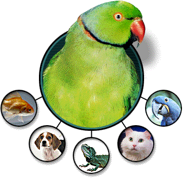

Welcome to Pet Store Agentic
Same nostalgic front door as the original Java Pet Store — a deliberately mundane e-commerce domain, chosen so the architecture stays the only interesting thing here. Everything below the storefront runs on K9-AIF: deterministic services for the ordinary path, one genuinely agentic capability for customer problem diagnosis, and a livestock fulfillment gate that no prompt can talk its way past.